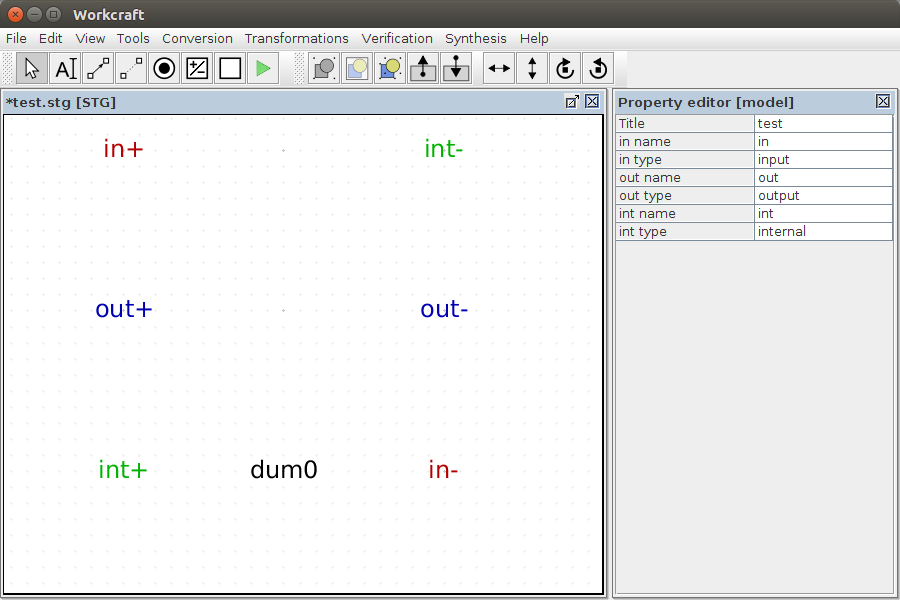
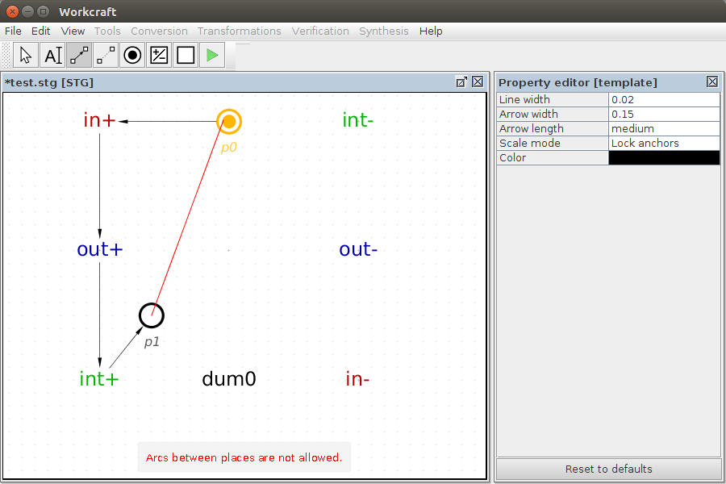
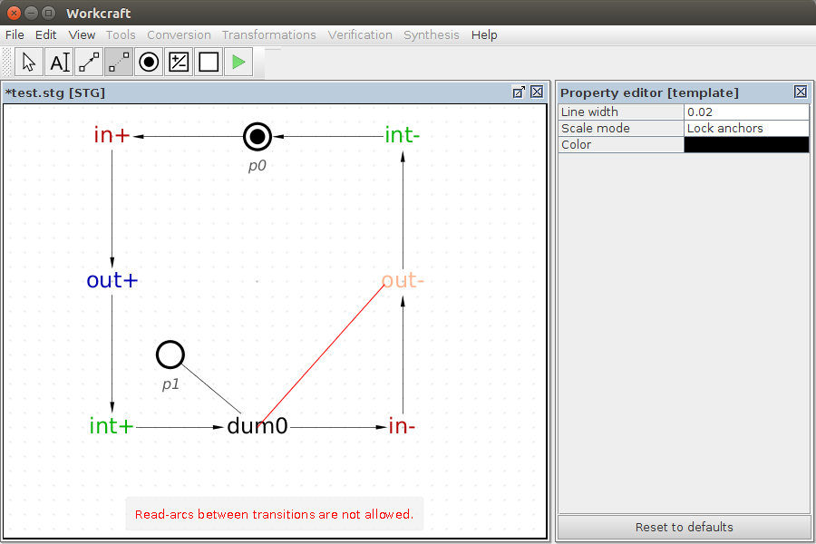
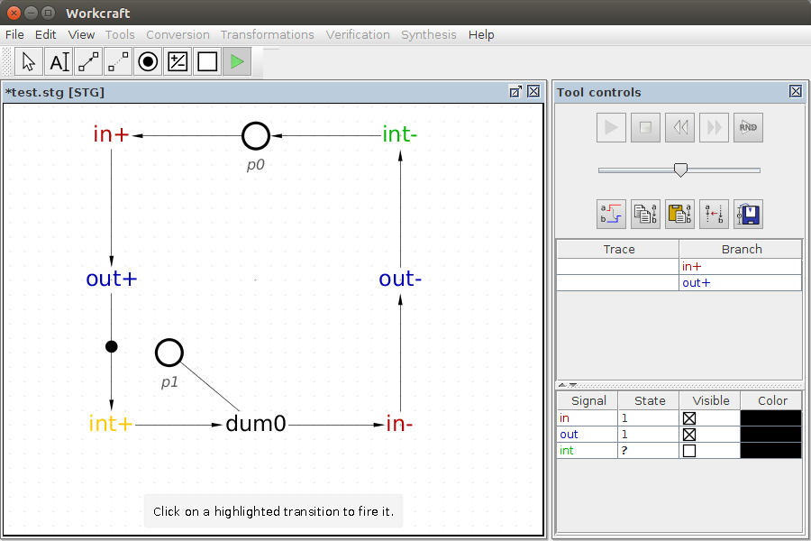
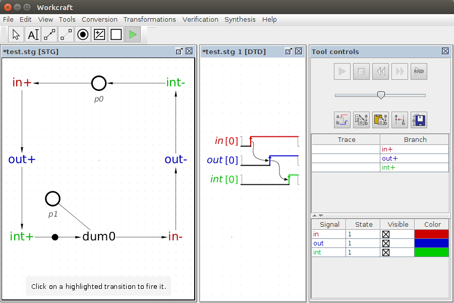
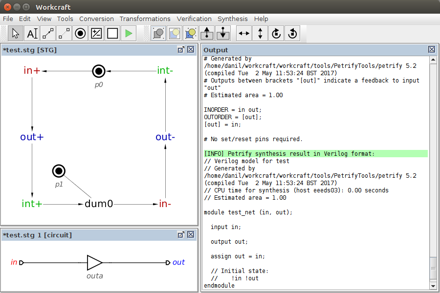

Table of Contents
Signal Transition Graph plugin
Familiarise yourself with Workcraft interface to learn its common features that are available for all plugins.
This plugin is intended for capturing, simulation and verification of Signal Transition Graphs (STGs), that is a special kind of Petri nets whose transitions are associated with signal events.
Capturing
In order to create an STG model choose File→Create work… menu item and in the New work dialogue select Signal Transition Graph as the model type.
To capture an STG you just put its nodes (places, dummies and signal transitions) on the editor pane and connect them by means of arcs.
Node generator tools
Creation of places is similar to that of Petri net plugin, by using the place generator ![[P] Place](../core/editor_tools-place.png "[P] Place") – just click the editor panel in the position you want a new place to appear. However, the creation of transitions is a bit more complicated as there are two classes of transitions in this plugin with their respective node generator tools:
– just click the editor panel in the position you want a new place to appear. However, the creation of transitions is a bit more complicated as there are two classes of transitions in this plugin with their respective node generator tools:
- – signal transition generator
– a tool for creating signal transitions with their rising and falling phases (denoted by+and-respectively after the signal name). This tool can also be activated by pressing T. ![[D] Dummy Transition](../core/editor_tools-transition.png "[D] Dummy Transition") – dummy transition generator
– dummy transition generator
– a tool for creating dummy transitions that do not belong to any signal and do not have rising or falling phase, but rather are used to simplify the structure of the STG. This tool can also be activated by pressing D.
Three types of signal transitions are supported denoting the input, output and internal events. By default a rising phase of an output signal is created (usually the automatically generated name is out+ - see Naming of transitions for details) when you click the editor panel. This behaviour can be changed by holding Ctrl and/or Shift keys while creating a signal transition as follows:
- Ctrl - create a falling phase of an output signal (usually
out-). - Shift - create a rising phase of an input signal (usually
in+). - Ctrl+Shift - create a falling phase of an input signal (usually
in-).
Naming of transitions
The automatic naming for the signal transitions is as follows. A transition is given in or out prefix depending on the type of the signal it represents – input or output respectively. Then a numerical suffix is added to the name, starting from 0. If a transition of the same signal already exists, then its type is checked to match the intended type of a newly created transition. If there is a mismatch (e.g. we want to create an output transition out+ but a transition of an input signal exists that has an ambiguous name out-) then the numerical suffix 0 is added to the transition name, making it out0-. If the name out0 is also taken by another signal type, a dummy or a place, then the suffix is incremented until a new transition of intended type can be created without causing a conflict.
Note that in order to distinguish transitions of the same signal and the same polarity they are assigned instance numbers that are separated from the label by / symbol. Therefore two rising transitions of a signal out have different instance number, e.g. 0 and 1 and their full names are out+/0 and out+/1 respectively. The instance numbers are automatically generated to be unique among transitions of the same phase and of the same signal. Usually the instance numbers do not need to be changed and therefore, for simplicity, they are even hidden in the editor panel. However, the instance number of a transition can be seen and altered if necessary in the property editor.
The automatically generated names for the dummies start from dum0 and the numerical suffix is incremented for each next dummy. Note that dummies also can have the instance numbers (e.g. dum/1 and dum/2 are essentially different transitions). However, it is usually more convenient to distinguish the dummies by their name main portion of their names (e.g. dum1 and dum2).
The internal signals are less frequently used and therefore there is no key combination for them. Instead, you need to create an output (or input) transition first, then rename it and finally change its signal type in the property editor. Note that renaming of the transition before changing its type is important as otherwise, all transitions with the same signal name will change their type.
If no model elements are selected, then the property editor shows the attributes of the whole model. In case of STG these are the names and types of all the signals. This is the good place to change the signals' names, so that all transitions of a renamed signal see the modification.

The STG transitions can be easily recognised by their color. By default the input transitions are red, output - blue, internal - green and dummies are black. This color scheme can be changed in the global preferences under the Common→Signal leaf of the settings tree (accessible via Edit→Preferences… menu item).

Connection tools
There are two types of arcs in STG plugin:
- producing/consuming arcs – these can be created with the tool for directed connections
![[C] Connect](../core/editor_tools-connect.png "[C] Connect") ;
; - read-arcs – these can be created with the tool for undirected connections
![[R] Read-arc](editor_tools-connect_undirected.png "[R] Read-arc") .
.
When either of the connection tools is active you can connect places and transitions by first clicking the source node and then the destination node. This will create a straight line connection between the source and the destination nodes. You can also create a polyline connection by clicking the editor panel in the positions of intermediate points, before clicking the destination node.
If you hold Ctrl then the destination node becomes a source for the next arc making it easier to form a sequence of connected nodes.
Note that STG places cannot be connected to each other – if you attempt to connect two places, then a warning will be issued that connections is not valid. However, unlike Petri nets, the STG transitions can be connected to each other without an explicit place in between. This shorthand notation is used when a place has a single transition in its preset and a single transition in its postset. For simplicity, such an implicit place is hidden and a directed arc is drawn directly between two transitions.

Read-arcs can only connect places with transitions – if you attempt to connect two places or two transitions with a read-arc, then a warning about the invalid connection will be issued. The semantics of a read-arc is that transition reads the marking of the place without consuming its tokens. Note the difference to a pair of consuming and producing arcs between the places and the transition (the former takes the token, and the latter puts it back into the place).

Editing
For editing the model activate the selection tool ![[S] Select](../core/editor_tools-select.png "[S] Select") . All the standard editing features (select, drag-and-drop, delete, copy, undo, group, etc.) work the same - see generic help on Selection controls and Property editor for details.
The only new feature is double clicking on a place:
. All the standard editing features (select, drag-and-drop, delete, copy, undo, group, etc.) work the same - see generic help on Selection controls and Property editor for details.
The only new feature is double clicking on a place:
- Double-click on an empty place to mark it with a token.
- Double-click a place marked with a token to remove the token.
- If a place has more than one token then double-clicking does not have any effect.
The attributes of an implicit place, e.g. the number of tokens or its capacity, can be modified in the property editor of a corresponding arc connecting two transitions. The signal name, phase and instance number of a transition can be changed in the property editor when the transition is selected.
Similar to all the other models, textual comments can be created by activating the ![[N] Text Note](../core/editor_tools-text_note.png "[N] Text Note") tool and clicking the editor panel in the position you want to put the text. Double-click on the note box to edit its text label in-place or do it through the property editor panel when the note is selected.
tool and clicking the editor panel in the position you want to put the text. Double-click on the note box to edit its text label in-place or do it through the property editor panel when the note is selected.
Simulation
For the simulation of an STG model activate the simulation tool ![[M] Simulate](../core/editor_tools-simulate.png "[M] Simulate") . The enabled transitions are highlighted and can be fired by clicking them. The simulation tool controls provide the means for analysis and navigation through the simulation trace, see generic help on Simulation controls for details.
. The enabled transitions are highlighted and can be fired by clicking them. The simulation tool controls provide the means for analysis and navigation through the simulation trace, see generic help on Simulation controls for details.
Note that the simulation controls are extended with the signal state table (at the bottom of Tool controls). The Signal column of the table lists all the signals of the STG while the State column captures the current state of each signal. The state of a signal is determined only by the phase of its last transition in the simulation trace. If the last was the signal's rising transition, then the state is 1; if it was a falling transition, then the state is 0. If no transition of a signal has happened yet, then its state is considered unknown and is denoted by a question mark ?. If a signal is excited (i.e. its transition is currently enabled) then its current state is in emphasised by bold font (1, 0, or ?).

In addition to the standard simulation controls, the STG simulator has a generator of trace diagram  . It converts the simulation trace into a Digital Timing Diagram – a collection of signal waveforms with causality arcs between signal events. The visibility and color of signals in the timing diagram are defined in Visible and Color columns of the signal state table. The order of signal waveforms is also defined in this table by rearranging (drag-and-drop) the signal rows.
. It converts the simulation trace into a Digital Timing Diagram – a collection of signal waveforms with causality arcs between signal events. The visibility and color of signals in the timing diagram are defined in Visible and Color columns of the signal state table. The order of signal waveforms is also defined in this table by rearranging (drag-and-drop) the signal rows.

The timing diagram is built for the main simulation trace – Trace column. If the Trace is empty then the timing diagram generator will suggest to use Branch simulation results instead.
Verification
A number of STG properties can be verified via Verification menu:
- Complete State Coding [MPSat] - verify the STG has Complete State Coding (CSC).
- Consistency [MPSat] - verify that STG signals are consistent (rising and falling transitions of the same signal alternate in all possible traces).
- Deadlock [MPSat] - verify if the STG is deadlock-free.
- Normalcy [MPSat] - check the normalcy property of the STG.
- Output persistency (without dummies) [MPSat] - verify the output signals of the STG are persistent (once enabled they do not get disabled until fired).
- Conformation (without dummies) [MPSat]… - check if this STG conforms to its environment STG (to be chosen in the file selection window).
- Unique State Coding [MPSat] - verify the STG has Unique State Coding (USC).
- Custom properties [MPSat]… - custom properties can be verified through formulation a reachability analysis problem using Reach language in a specialised MPSat configuration window.
Most of these are reachability properties, i.e. verify the if a “violating” state is reachable, In this case the verified property is not satisfied and a trace (or a family of traces) leading to the violation is reported. The trace can be passed to the simulation tool (by clicking the Play button) for playback and analysis of the reasons leading to the violation.

Checking for encoding conflicts (Complete State Coding [MPSat] and Unique State Coding [MPSat]) also provides the interface for visualisation of the cores of the encoding conflicts. This feature is demonstrated below for an STG of an A2D controller.
")
A user can choose between two types of visualisation in the Tool controls panel:
- Show selected core – individual cores in a selected set of cores are highlighted in distinct colours (see the example on the right). This feature can be useful for detailed analysis of the encoding conflicts to make an informed decision on how to manually resolve them.
- Show core density map – the darker shades denote the higher density of the overlapping cores (example on the left). Usually, it is advantageous to insert new signals in the areas where most cores overlap, thus eliminating more conflicts by a single signal. Note that the number of density map levels can be configured in the Maximum number of encoding core density map levels property of Signal Transition Graph model under Edit→Preferences… menu (5 levels by default).
Synthesis
The STG specification can be synthesised into Boolean equations by using Petrify or MPSat as backend tools:
- Petrify is a tool for the synthesis of Petri nets and asynchronous controllers. It explicitly enumerates all states reachable by the specification, encodes them with the vectors of signal values and derives the Boolean equations for the output signals. The full state space exploration limits the applicability of this tool to relatively compact asynchronous controllers (up to few dozens of signals). Apart from logic synthesis, Petrify is also capable of hazard-free decomposition and technology mapping of its solution into the library of available gates.
- MPSat is a model checking and synthesis system that uses Petri net unfoldings as a means to avoid the explicit representation of the specification state space. It relies on SAT solver for the synthesis and verification tasks. MPSat does not (fully) support decomposition and technology mapping yet. On the other hand, MPSat enables verification of several predefined model properties (deadlock, CSC, USC, normalcy) and provides a Reach language to verify custom properties.
These synthesis options are available under the Synthesis menu:
- Complex gate [MPSat] - synthesise the STG in complex gates using MPSat backend tool.
- Complex gate [Petrify] - synthesise the STG in complex gates using Petrify backend tool.
- Generalised C-element [MPSat] - synthesise the STG in generalised C-elements using MPSat backend tool.
- Generalised C-element [Petrify] - synthesise the STG in generalised C-elements using Petrify backend tool.
- Standard C-element [MPSat] - synthesise the STG in standard C-elements using MPSat backend tool.
- Technology mapping [MPSat] - synthesise the STG for a library of available gates using MPSat backend tool.
- Technology mapping [Petrify] - synthesise the STG for a library of available gates using Petrify backend tool. The library of gates can be specified in the under Models→Digital Circuit leaf of the global preferences tree (available via Edit→Preferences menu).
Here is an example of a complex gate synthesis of our example by Petrify. The synthesis result in Verilog format is reported in the Output tab. This Verilog netlist also is automatically converted into a Digital Circuit model.

In case of this example the complex gate implementation is just a buffer between the input in and the output out pins.